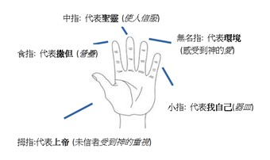
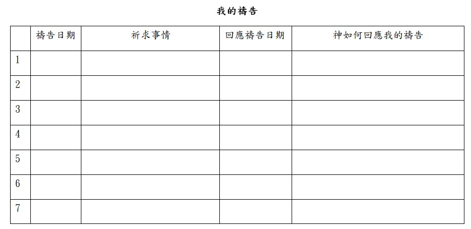

禱告
靠著聖靈, 隨時多方禱告祈求；並要在此警醒不倦, 為眾聖徒祈求. (弗6:18)
禱告是和上帝交談. 禱告乃是天父特別為祂的兒女所設立與祂相交的方式. 因此, 禱告是雙向的溝通, 而非單向報告, 禱告是表示我們相信上帝會聽我們, 不只是話語, 也是對獨一上帝的態度與心聲的表達. 因此, 禱告就是說話, 只是對象是上帝. (約16:23-24)
到那日，你們什麼也就不問我了。我實實在在的告訴你們，你們若向父求什麼，祂必因我的名賜給你們。 向來你們沒有奉我的名求什麼，如今你們求，就必得著，叫你們的喜樂可以滿足。
所以當我們和這位神講話的時候, 您會怎麼起頭呢? _______
開始禱告的稱呼有：親愛的主耶穌, 阿爸天父, 親愛的父神, 我們的天上爸爸, 親愛的上帝等等）
我們有一位神會回答禱告, 這是何等大的祝福呢！讓我們來想一想：
- 根據以上經文, 在你的禱告中, 可以向誰求？ 天上的那位爸爸. 必須奉誰的名禱告？ 奉耶穌基督的名.
結果是甚麼？ 我們祈求, 因耶穌基督的名, 而賜給我們, 叫我們的喜樂可以滿足。
- 為什麼禱告結尾時, 都還要加上 『奉主耶穌的名』呢？
神的應許，不論有多少，在基督都是是的。所以藉著祂也都是實在（實在：原文是阿們）的，叫神因我們得榮耀。 (林後1:20) 上帝所給的應許, 因為基督的緣故, 都成為我們的祝福, 是可以實現的. 因此當們說 『奉耶穌的名』的時候, 就好像拿著耶穌的名片, 請上帝看在耶穌的份上, 同意我們的要求。 您會不會覺得這實在是很棒的一件事呢! 不過, 讓我們認真想一想, 頂著耶穌的名號? 您認為甚麼樣的禱告內容, 才不會覺得頂著耶穌的名頭不會不妥當呢? 我們覺得我們的禱告耶穌能背書嗎？(是否我們是出於真誠? 這樣的禱告會不會違反神的心意? 能否見證神的榮耀呢? 你覺得這樣的禱告耶穌會喜歡嗎?)
- 奉耶穌的名可以支取神的應許, 那麼結尾時, 說 『阿們』又是甚麼意思呢？ 阿們：誠心所願或者同意、贊成、真實
- 開頭和結尾都有了, 但中間該說些甚麼才恰當呢？既然禱告是我們與神的談話, 那麼甚麼是最常談到的內容呢?
- 上帝啊！我的工作、家庭、孩子、功課… (祈求)
我們最常跟上帝說的話, 大概就是一堆的祈求了！這是非常正常也正確的事. 跟上帝講我們今天的壓力, 我們需要的協助, 都是恰當的！不過, 如果我們和父母、配偶、孩子之間的對話, 全都只有要求, 您覺得會如何呢？
- 跟上帝說謝謝祂為我們做的各樣事、謝謝祂愛我們、救贖我們, 這些都是健康基督徒生命自然的流露. 此外, 想起上帝的榮耀與大能大力, 因此尊崇祂! 承認祂是尊貴全能的上帝, 將祂放在心中神應該在的位置敬拜祂, 也會是我們每天跟上帝的談話內容喔! (感謝、讚美)
相信嗎! 這是禱告內容中多數人最弱的一環; 我們不習慣審視每一天生活經歷, 也不容易安靜思想創造的問題, 所以, 要做到這一點, 需要刻意的努力. 讓我們練習一下, 把上帝為您做的事、對您各項的恩典, 以及您想到可以讚美上帝的是列出來:
感謝神, 設立祢榮耀的寶座在我們中間,
感謝祢, 賜我們生命的氣息,
讚美祢, 是創造那諸天和穹蒼的上帝, 祢用大能拖住萬有,
感謝祢為我們建造房屋又看守城池,
讚美祢是我們的彌賽亞, 我們的拯救者…等等
* 請問是十天不吃飯還是不喝水, 比較嚴重? 請問是十天不喝水還是不呼吸, 比較嚴重? 反過來問, 請問是飯比較貴還是水? 請問是水比較貴還是空氣? 我們有為神所設立的一切, 獻上我們的感謝和讚美嗎?
- 告訴上帝, 甚麼事情做得不好, 良心不安, 可能得罪了祂. 上帝是我們生命的主, 祂有權整理我們的生命, 因此, 每天在上帝面前認罪是每位基督徒應該有的心靈環保（認罪）. 我們的良心並不可靠, 有的時候雖然做錯了, 卻不覺得有錯, 有時候又會過度的責備自己, 因此, 在上帝面前天天整理自己的言行舉止是智慧的！我們不但需要上帝的赦免, 也需要上帝天天提醒我們真理的道, 祂也會成為我們拒絕罪惡的力量.
約壹1:8-9 我們若說自己無罪，便是自欺，真理不在我們心裡了。 我們若認自己的罪，神是信實的，是公義的，必要赦免我們的罪，洗淨我們一切的不義。
- 現在可以為我所掛念人、事禱告了吧？！
代求是我們的天職, 也是我們的權力, 上帝樂意我們把別人放在眼裡, 所以認真為別人禱告, 包括人家的生活, 人家的得救, 甚至國家大事、宣教…… 都是我們應該在乎的事情.
我勸你，第一要為萬人懇求、禱告、代求、祝謝； 為君王和一切在位的，也該如此，使我們可以敬虔、端正、平安無事的度日。 (提前書2:1-2) 神不但喜歡我們為別人代禱, 也要我們將別人的代求事, 要當成是自己的, 不要同樣的事, 發生在自己就迫切禱告且有說不盡的話來跟神求, 但是發生在別人身上, 就輕描淡寫的一句帶過去. 此外要記得如果我們不能為神作工, 要為那肯為神作工的人代求. 撒上30:24 上陣的得多少，看守器具的也得多少；應當大家平分。
如果可以, 要參加教會的禱告會, 因為這樣我們可以彼此代求, 而且主耶穌說：我又告訴你們，若是你們中間有兩個人在地上同心合意的求什麼事，我在天上的父必為他們成全。 因為無論在哪裡，有兩三個人奉我的名聚會，那裡就有我在他們中間。 (太18:19-20)
生命冊
生命冊屬靈認領代禱
你是否期待你生命圈中的每一個人都能被記在生命册上？
以下的禱告是要幫助你能按照聖經所寫的原則，有效地為你生命圈中的每一個人得救禱告，已經有許多人見證此禱告的果效，祝福你也能經歷禱告蒙垂聽的喜樂。
（※有___請加入姓名，並可自行擴充內容）
• 主啊！我將___帶到上帝寶座前，相信___是耶穌要救贖的。
• 主啊！求祢綑綁在___身上一切魔鬼的作為，使___不再受魔鬼阻撓，能自由選擇信或不信耶穌。
• 懇求聖靈光照___知罪，向他顯明真理與救恩，吸引___接受耶穌。
• 求主為___安排週遭的環境，透過他身邊的人事物，使___經歷上帝的愛，並覺得自己需要耶穌基督的救贖與祂的愛。
• 求主也使用我來祝福___，求祢賜下機會，幫助我在適當的時候，說適當的話，做適當的事，能以生命來見證信仰，帶領___決志歸主。奉主耶穌基督的名禱告。阿們！

代禱-五指禱告法
當你為失喪者代禱時，就會在靈裏孕育出對那失喪靈魂的負擔和異象。
- 拇指(向天父): 提名到天父面前，他的靈魂是寶貴的，宣告他是耶穌所買贖的。(約3:16)
- 食指(向撒但): 綑綁那些在他生命中的黑暗權勢，打破其堅固營壘，奪回其心意，能自由選擇歸向基督。(林後10:3-5)
- 中指(向聖靈): 求聖靈吸引他歸向基督，光照他知罪，向他顯明救恩。(約16:8)
- 無名指(向環境): 求天父安排四周的環境、事物、人事，使他領悟到自己需要基督，能感受到神的愛。(約4:7-26)
- 小指(向自己): 求天父賜恩膏、恆心、和勇氣去帶領他歸主: 在對的時間，說對的話，做對的事。(太5:13-16; 徒1:8)
這四項禱告的事情, 有一定的順序嗎? 其實這四項事並沒有絕對的順序, 也不是每一次禱告的時候全都要包括, 想想看, 如果上帝剛剛提醒您哪一件事做錯了, 您心裡難過得很, 一定會先跟上帝說對不起嘛！但若是在固定的禱告時間, 先好好敬拜感恩, 再向上帝認罪, 然後為自己以及他人禱告, 就是很恰當也是很自然得流程了.
首先, 上帝喜悅回應我們的禱告
路11:9-12
我又告訴你們，你們祈求，就給你們；尋找，就尋見；叩門，就給你們開門。 因為，凡祈求的，就得著；尋找的，就尋見；叩門的，就給他開門。 你們中間作父親的，誰有兒子求餅，反給他石頭呢？求魚，反拿蛇當魚給他呢？ 求雞蛋，反給他蠍子呢？
聖經清楚地說上帝有為父的心, 在我們祈求的事上, 祂願意照我們所求的成就! 但有的時候, 我們求的內容並不恰當, 這樣上帝應該垂聽嗎? 或者有其他的原因, 使我們沒有看到神的回應呢? 有那些原因可能禱告似乎沒被上帝答應?
- 妄求 ～ 有問題、對我們或者對別人不好的禱告, 上帝不會答應
雅4:3你們求也得不著，是因為你們妄求，要浪費在你們的宴樂中。
如果你的孩子向你要毒藥來止渴, 你會答應他嗎？我們的神 是我們天上的父親, 因此, 祂會衡量甚麼是對我們好的事. 不過話又說回來, 除了一些很明顯不好的內容之外, 仍有一些禱告我們覺得上帝應該答應, 而祂卻沒垂聽, 那又是怎麼一回事呢?
- 心懷二意 ~ 我們對所求的事情, 有所懷疑
雅各書 1:6-8只要憑著信心求, 一點不疑惑; 因為那疑惑的人, 就像海中的波浪, 被風吹動翻騰. 這樣的人, 不要想從主那裏得甚麼. 心懷二意的人, 在他一切所行的路上, 都沒有定見.
我們向神祈求的時候，應當絕對相信神的能力，並且也深信祂必樂於賜予。因為禱告得答應有一個定律，就是信。信是尊重神，榮耀神；疑惑是輕看神，羞辱神，所以叫神沒法答應我們的禱告。如果你見過波濤洶湧、巨浪滔天的景象，就會瞭解這樣的海面是何等的不平靜。疑惑使人像翻騰的波濤一樣搖擺不定；疑惑的心會隨著環境的變遷而更動，就不能完全相信神的旨意是最好的，看神的話語就如同一般人的意見一樣，可聽可不聽, 可信可不信。
- 並非不聽, 而是延後實現
約翰福音11:1-6
有一個患病的人，名叫拉撒路，住在伯大尼，就是馬利亞和他姊姊馬大的村莊。 這馬利亞就是那用香膏抹主，又用頭髮擦祂腳的；患病的拉撒路是他的兄弟。 他姊妹兩個就打發人去見耶穌，說：主啊，祢所愛的人病了。 耶穌聽見，就說：這病不至於死，乃是為神的榮耀，叫神的兒子因此得榮耀。 耶穌素來愛馬大和她妹子並拉撒路。 聽見拉撒路病了。就在所居之地仍住了兩天。
這段經文談到一位叫________________的人, 他生病了, 他的姊妹差人去請耶穌來, 但是耶穌卻等到他死了之後才抵達！讓我們看看做姊姊的心聲.
約11:21; 32 馬大對耶穌說：主啊，祢若早在這裡，我兄弟必不死。 …… 馬利亞到了耶穌那裡，看見祂，就俯伏在祂腳前，說：主啊，祢若早在這裡，我兄弟必不死。
但耶穌的意思是甚麼呢？上帝並非不答應這對姊妹的求助, 而是延後實現, 目的是要讓他們看見耶穌真的是生命的主, 使他們得更大的祝福. 但要小心, 我們會不會常常不願意等待, 而跑在上帝的面前先處理了呢？當然, 還有一種我們覺得上帝並未垂聽我們禱告的狀況…
- 並非不聽, 而是未照我想像的方式回答
有的時候, 我們會以為上帝垂聽禱告的方式是在我們的禱告詞上頭批一個如擬或者寫上照准！ 但許多時候, 上帝卻喜歡修改我們禱告的內容, 在回應我們的時候, 祂總要給我們最好的！
路8:26-39 記載了一個被鬼附的人, 當他被耶穌醫治之後, 他怎麼說呢？
他們到了格拉森人的地方，就是加利利的對面。 耶穌上了岸，就有城裡一個被鬼附著的人迎面而來。這個人許久不穿衣服，不住房子，只住在墳塋裡。他見了耶穌，就俯伏在他面前，大聲喊叫，說：至高神的兒子耶穌，我與祢有什麼相干？求祢不要叫我受苦！ 是因耶穌曾吩咐污鬼從那人身上出來。原來這鬼屢次抓住他；他常被人看守，又被鐵鍊和腳鐐捆鎖，他竟把鎖鍊掙斷，被鬼趕到曠野去。 耶穌問他說：你名叫什麼？他說：我名叫群；這是因為附著他的鬼多。 鬼就央求耶穌，不要吩咐他們到無底坑裡去。 那裡有一大群豬在山上吃食。鬼央求耶穌，准他們進入豬裡去。耶穌准了他們，鬼就從那人出來，進入豬裡去。於是那群豬闖下山崖，投在湖裡淹死了。 放豬的看見這事就逃跑了，去告訴城裡和鄉下的人。 眾人出來要看是什麼事；到了耶穌那裡，看見鬼所離開的那人，坐在耶穌腳前，穿著衣服，心裡明白過來，他們就害怕。 看見這事的便將被鬼附著的人怎麼得救告訴他們。格拉森四圍的人，因為害怕得很，都求耶穌離開他們；耶穌就上船回去了。 鬼所離開的那人懇求和耶穌同在；耶穌卻打發他回去，說： 你回家去，傳說神為你做了何等大的事。他就去，滿城裡傳揚耶穌為他做了何等大的事。
看起來耶穌似乎沒答應他的祈求, 但仔細一想, 這人所求的是服事耶穌, 耶穌卻要他回去他的家鄉 (剛剛他們才表明拒絕耶穌入境), 傳揚上帝, 這不就是服事耶穌了嗎？耶穌並非不聽他的懇求, 只是未照他所想像的方式回答!上帝的方法更美!
- 我們的祈求並非我們真的很想要
路18:1-8
耶穌設一個比喻是, 那裡，說：我有一個對頭，求你給我伸冤。 他多日不准。後來心裡說：我雖不懼怕神，也不尊重世人， 只因這寡婦煩擾我，我就給他伸冤吧，免得他常來纏磨我！ 主說：你們聽這不義之官所說的話。 神的選民晝夜呼籲他，他縱然為他們忍了多時，豈不終久給他們伸冤嗎？ 我告訴你們，要快快的給他們伸冤了。然而，人子來的時候，遇得見世上有信德嗎？
有時候我們的禱告因為對神的話一直有疑惑, 懷疑我們真的能得到嗎? 我們對自己所求的, 存著不相信神會要給我們, 甚至有時候只是有種 『要要看』的心態。 希11:6 人非有信，就不能得神的喜悅；因為到神面前來的人必須信有神，且信祂賞賜那尋求祂的人。如果我們真的很渴望我們所祈求的, 我們就會像那寡婦一樣, 不斷的祈求, 直到有答案為止, 有時神會回應我們所求的, 有時會告訴我們是妄求, 有時會要我們繼續等候, 甚至有時會給我們的答案並非是我們所求的, 但我們除了一定要相信天父爸爸是愛我們的, 會回應我們的禱告, 我們也要學會記錄我們的禱告, 才會慢慢明白上帝的心意, 知道怎樣跟上帝祈求。再者, 如果我們不紀錄我們的禱告, 有時神聽了我們的禱告, 我們卻早已忘了這是我們當初跟神求的, 以致我們對禱告的能力沒有這麼確信.
接下來, 我們要談到有的時候不想禱告, 或者無力禱告, 甚至不曉得怎麼禱告, 這樣要怎麼辦呢?
況且我們的軟弱有聖靈幫助，我們本不曉得當怎樣禱告，只是聖靈親自用說不出來的歎息替我們禱告。 鑒察人心的，曉得聖靈的意思，因為聖靈照著神的旨意替聖徒祈求。(羅8:26-27) 有時神的靈會提醒我們生活中的一些事, 或者我們在軟弱的時候, 無法用語言表達心中的呼求, 於是聖靈就出面引導甚至代替我們禱告. 這樣的禱告常常無法用語言來說清楚, 就好像所有的事情都在瞬間向上帝說了, 心裡的重擔或者情緒上的痛苦, 被上帝了解整理, 覺得那是從心靈深處來的禱告, 這就是聖靈的代求.
如何經歷在聖靈裡的禱告?
- 養成固定禱告的習慣, 每天習慣在上帝的面前跟上帝談話, 整理自己. 雖然基督徒可以隨時, 只要需要都可以禱告, 但是常因為沒有養成固定時間禱告, 以致就成了隨時可以禱告, 變成隨時都沒有禱告, 故希望能最少應養成早晚及吃飯前的謝飯禱告的習慣.
- 禱告的地點最好能固定, 並選擇一個能讓自己安靜與上帝獨處的地方, 因為能幫助我們在禱告中不被干擾, 更能讓我們學習專心在與神的交通之間.
- 在每次有難擔的事時, 立刻向主祈求! 並且直接了當向主傾吐您的感情, 如果說不清楚, 那就在上帝的面前有一些安靜的時間, 讓聖靈有機會為你代求.
- 信任上帝的引導與帶領, 並且常常持定這樣的心! 請祂出面解決您生命的問題
- 讓小組中其他的肢體知道並分擔您的壓力, 並且為您代求, 這樣我們就更能經歷在聖靈中禱告的能力
況且我們的軟弱有聖靈幫助，我們本不曉得當怎樣禱告，只是聖靈親自用說不出來的歎息替我們禱告。 鑒察人心的，曉得聖靈的意思，因為聖靈照著神的旨意替聖徒祈求。(羅8:26-27) 有時神的靈會提醒我們生活中的一些事, 或者我們在軟弱的時候, 無法用語言表達心中的呼求, 於是聖靈就出面引導甚至代替我們禱告. 這樣的禱告常常無法用語言來說清楚, 就好像所有的事情都在瞬間向上帝說了, 心裡的重擔或者情緒上的痛苦, 被上帝了解整理, 覺得那是從心靈深處來的禱告, 這就是聖靈的代求.
如何經歷在聖靈裡的禱告?
- 養成固定禱告的習慣, 每天習慣在上帝的面前跟上帝談話, 整理自己. 雖然基督徒可以隨時, 只要需要都可以禱告, 但是常因為沒有養成固定時間禱告, 以致就成了隨時可以禱告, 變成隨時都沒有禱告, 故希望能最少應養成早晚及吃飯前的謝飯禱告的習慣.
- 禱告的地點最好能固定, 並選擇一個能讓自己安靜與上帝獨處的地方, 因為能幫助我們在禱告中不被干擾, 更能讓我們學習專心在與神的交通之間.
- 在每次有難擔的事時, 立刻向主祈求! 並且直接了當向主傾吐您的感情, 如果說不清楚, 那就在上帝的面前有一些安靜的時間, 讓聖靈有機會為你代求.
- 信任上帝的引導與帶領, 並且常常持定這樣的心! 請祂出面解決您生命的問題
- 讓小組中其他的肢體知道並分擔您的壓力, 並且為您代求, 這樣我們就更能經歷在聖靈中禱告的能力
- 不敢禱告:
由於有罪尚未承認, 故不敢到上帝面前禱告, 事實上帝是愛的天父, 不必恐懼與逃避, 反而更應該來到祂面前, 先把最對付清楚, 上帝樂意親近我們.
- 不會禱告:
禱告是需要操練, 故運用上面所教禱告方式, 隨時隨地將所預見的事, 或每日讀經新得像上帝讚美、祈求. 越操練禱告, 就越會禱告.
- 不能專心:
禱告時常會發現有些事會令我們分心無法繼續. 環境的干擾、心思的散漫, 是兩項最大的障礙, 故盡量找出不受打擾的地與時, 並學習出聲禱告; 可以幫助集中思想, 專心禱告.
- 不想禱告:
心中忙亂、煩躁不安時, 加上禱告上地好像沒有反應, 好像自己在自言自語. 這種感覺是來自魔鬼. 魔鬼不希望我們禱告, 要我們憑感覺猜測上地是否同在與傾聽. 在這時候更應該勉強自己跪下來, 求主幫助. 在雅各書4:8看到神的應許, 你們親近上帝, 上帝就必親近你們.
輪船在海裡航行的時候. 遇到大霧, 常鳴汽笛, 一面發出警告的聲音, 一面盼望得到汽笛的回音, 以便知道如何向前航行. 我們今天在這芒芒人生海洋上, 時常會遇到瀰漫的大霧, 使我們難以認清前進的方向, 在這樣的時候, 我們也應常禱告, 放出心靈的笛聲並且細聽神的呼喚, 使我們避免危險與錯誤, 在神的引導下過我們餘下的時日, 也只有這樣跟隨主, 才能使我們基督徒的人生放出光芒和更有意義.

祢以恩典為年歲的冠冕，祢的路徑都滴下脂油。(詩篇65:11)
我以禱告經歷神的恩典!